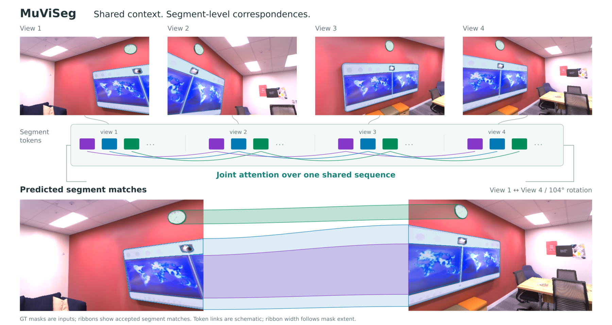
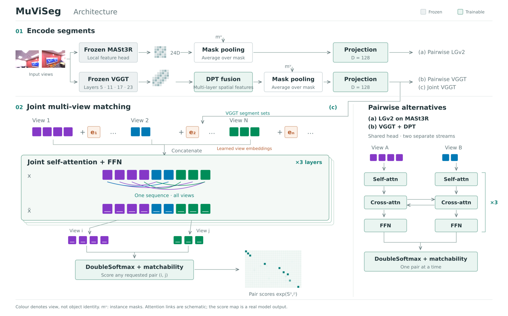
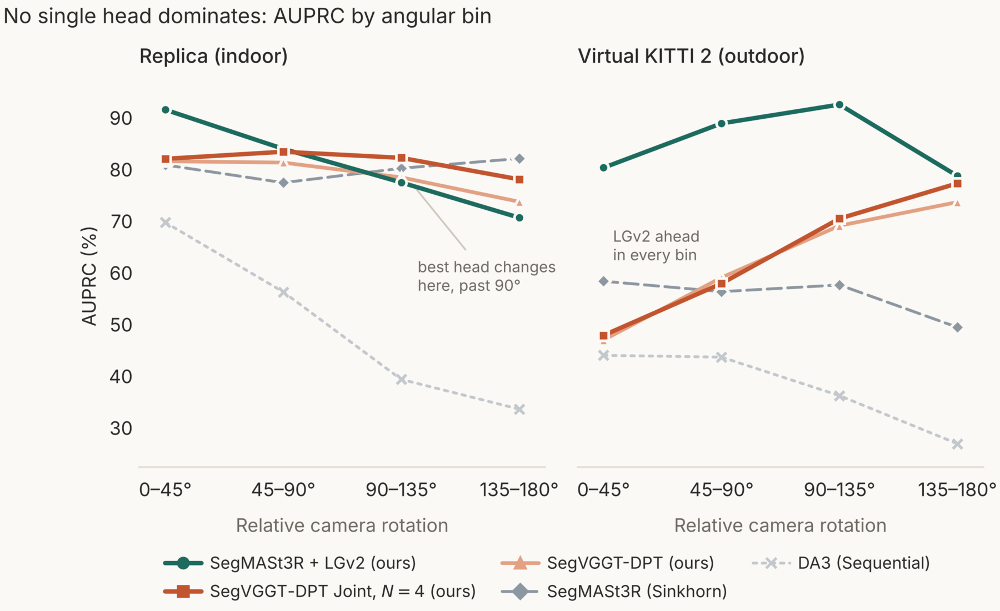
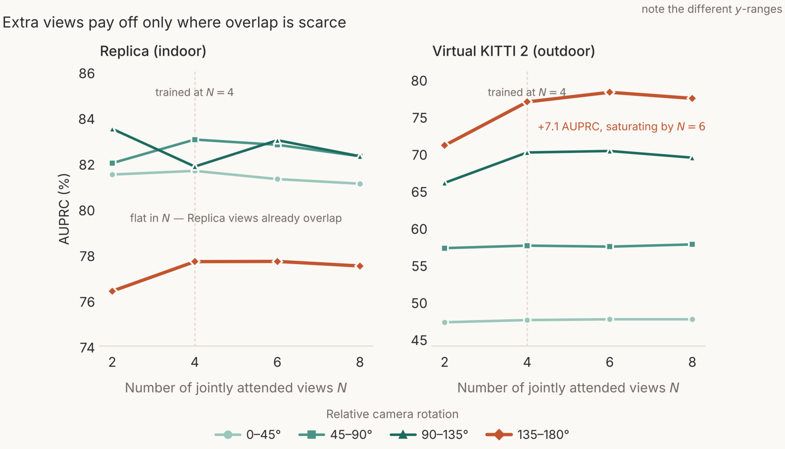

Object-level mapping and navigation require correspondences between whole instance segments rather than pixels or keypoints. We study how frozen 3D foundation features should be processed for segment matching and introduce MuViSeg: a learned pairwise attention head on MASt3R, multi-scale VGGT feature fusion, and a joint multi-view head that reasons over segments from several views to recover transitive matches.
In zero-shot evaluation on Replica and Virtual KITTI 2 across 0°–180° viewpoint changes, the MASt3R head improves over a Sinkhorn matcher by 4.85 and 25.9 AUPRC points, respectively. The multi-view head is strongest among our heads at the widest Replica baselines, although Sinkhorn remains competitive. Across 102 HM3D navigation episodes, direct segment matchers and sparse keypoint aggregation are statistically indistinguishable, while RoMa's dense matches voted into masks score 13.72–17.98 SPL points lower than direct segment matching.
Keywords Segment matching · 3D foundation models · Multi-view correspondence · Topological navigation
A robot revisiting a room has to decide whether this chair seen now is the same chair seen a minute ago. Sparse and dense matchers answer at the wrong level: a downstream system must recover object identity by voting matches inside a mask, and the associations are only as reliable as that voting rule. We take the segment-level route and test three concrete pipelines, each a different answer to the question above.
A frozen backbone produces per-patch features, a class-agnostic segmenter partitions each image into instance masks, masked average pooling gives one descriptor per segment, and a head refines those descriptors and predicts correspondences. The three variants differ in where capacity sits, which backbone feeds it, and how much context the head sees.

A LightGlue-style attention head on frozen 24-dim MASt3R descriptors: three blocks of weight-shared self-attention, bidirectional cross-attention and an FFN.
≈800K trainableDPT fusion over four Aggregator depths restores boundary precision that single-layer pooling loses, then the same attention stack as (a).
≈10.7M trainableDescriptor sets from all N views are concatenated into one sequence with learnable per-view embeddings and refined by three joint self-attention layers. Any pair can then be scored.
Trained at N=4, evaluated at N ∈ {2,4,6,8}MASt3R's features are pair-dependent: they cannot be computed without the second image, which suits a strong pairwise head but cannot be shared across a variable set of views. VGGT's Aggregator processes all input views in one shared sequence and its features are pair-independent. Joint multi-view matching is therefore only reachable on VGGT — the backbone comparison is a consequence of studying that axis, not an independent variable.
From the scaled affinity between refined descriptors, a row-softmax and a column-softmax give two conditional distributions; the DoubleSoftmax score is the log of their product, which is large only when each segment is the other's best match. Not every segment has a counterpart — some are occluded, out of frame, or absent — so each carries a matchability logit, and the score matrix is augmented with a learnable dustbin row and column. A segment is matched only if both its matchability passes 0.5 and its best score exceeds the dustbin.
Clamping the learned DoubleSoftmax temperature to τ ≤ 1 cuts the dominant false-dustbin errors by 36% relative, re-allocating the error budget toward harder wrong-match cases. For this head, calibrated scoring rather than richer descriptors is the binding constraint.
All models are trained only on ScanNet++ and evaluated zero-shot on Replica (indoor) and Virtual KITTI 2 (outdoor driving). Pairs are stratified into four bins by relative camera rotation. The headline metric is AUPRC; R@1 and R@5 are query-weighted across bins.
| Model | AUPRC by bin | Overall | |||||
|---|---|---|---|---|---|---|---|
| 0–45° | 45–90° | 90–135° | 135–180° | AUPRC | R@1 | R@5 | |
| vizEnc+Radio | 41.91 | 38.99 | 41.25 | 38.36 | 40.69 | 58.20 | 79.04 |
| LiftFeat | 47.17 | 32.13 | 25.19 | 24.92 | 35.69 | 40.21 | 67.57 |
| vizEnc+DINOv2 | 50.78 | 47.24 | 49.49 | 50.15 | 49.48 | 59.29 | 80.29 |
| DA3 (Sequential) | 69.36 | 55.91 | 38.99 | 33.23 | 54.29 | 73.96 | 73.96 |
| SegMASt3R (Sinkhorn) | 80.48 | 77.04 | 79.83 | 81.72 | 79.63 | 81.45 | 94.21 |
| SegVGGT-DPT (ours) | 81.20 | 80.93 | 78.07 | 73.36 | 79.70 | 74.10 | 90.11 |
| SegVGGT-DPT Joint, N=4 (ours) | 81.66 | 83.03 | 81.85 | 77.69 | 81.37 | 75.64 | 90.42 |
| SegMASt3R+LGv2 (ours) | 91.17 | 83.59 | 77.09 | 70.28 | 84.48 | 77.46 | 93.63 |
Table 1 — Replica (indoor, 3,200 pairs, 28,022 queries). Best per column in bold, second best underlined. LGv2 takes overall AUPRC with +4.85 over the Sinkhorn baseline, concentrated at narrow baselines (+10.7 at 0–45°) — but at 135–180° it drops 11.4 points below that baseline. The learned head sharpens the regime well represented in training and extrapolates worse to low-overlap, high-rotation pairs. There the Joint head takes over, beating the pairwise DPT variant by 4.3 AUPRC at the widest bin.
| Model | AUPRC by bin | Overall | |||||
|---|---|---|---|---|---|---|---|
| 0–45° | 45–90° | 90–135° | 135–180° | AUPRC | R@1 | R@5 | |
| vizEnc+Radio | 29.01 | 28.29 | 23.47 | 21.12 | 27.54 | 43.38 | 66.89 |
| vizEnc+DINOv2 | 31.86 | 31.05 | 25.50 | 23.40 | 30.22 | 46.68 | 70.34 |
| LiftFeat | 35.40 | 30.00 | 27.21 | 20.88 | 32.35 | 47.21 | 68.04 |
| DA3 (Sequential) | 43.64 | 43.29 | 35.84 | 26.53 | 40.67 | 53.74 | 75.40 |
| SegMASt3R (Sinkhorn) | 57.98 | 55.96 | 57.26 | 49.06 | 56.91 | 63.67 | 81.57 |
| SegVGGT-DPT (ours) | 46.60 | 58.69 | 68.72 | 73.29 | 52.28 | 42.80 | 67.27 |
| SegVGGT-DPT Joint, N=4 (ours) | 47.50 | 57.54 | 70.10 | 76.92 | 52.85 | 42.93 | 66.75 |
| SegMASt3R+LGv2 (ours) | 79.94 | 88.52 | 92.16 | 78.34 | 82.78 | 73.25 | 96.22 |
Table 2 — Virtual KITTI 2 (outdoor driving, 3,200 pairs, 10,308 queries), same protocol, also zero-shot. LGv2 reaches 82.78% overall, +25.87 over the Sinkhorn baseline and +30.50 over pairwise VGGT: MASt3R's explicit cross-view geometric coupling transfers from indoor training to outdoor driving better than VGGT's joint self-attention does. Both VGGT heads show an inverted, driving-specific angular pattern — they rise from the narrowest to the widest bin, consistent with difficulty separating near-identical segments at narrow baselines.

Replica and Virtual KITTI 2 are both rendered. We therefore also report ScanNet++ validation on real captured imagery from held-out scenes — indoor and in-domain rather than zero-shot.
| Matcher | AUPRC | R@1 | R@5 |
|---|---|---|---|
| SegMASt3R (Sinkhorn) | 88.9 | 83.3 | 97.1 |
| SegVGGT-DPT (ours) | 89.6 | 82.2 | 97.6 |
| SegVGGT-DPT Joint (ours) | 90.6 | 85.5 | 97.1 |
| SegMASt3R+LGv2 (ours) | 91.0 | 85.4 | 98.5 |
Table 3 — ScanNet++ validation, held-out scenes. All three of our heads sit at or above the Sinkhorn baseline when the domain matches training.
The Joint model is trained at N = 4 and evaluated at N ∈ {2, 4, 6, 8} without retraining. Position-embedding indices 4–7 are never directly supervised, yet the model extrapolates without collapse — consistent with joint attention learning view-relative rather than view-absolute patterns.

The Joint model, trained on ScanNet++ at N = 4, applied without retraining to a sequence captured by a robot at Skoltech. A sliding window of consecutive frames is matched in one joint pass over 60 windows; one colour per instance, kept across all views the model matched it in. Masks are FastSAM proposals rather than the ground-truth masks used in the benchmarks above, and the capture has no ground-truth identities — so this is qualitative evidence, and it is also the only setting here where the segmenter is the one a deployed system would actually run.
Future work should test outdoor training data and extreme-rotation sampling, routing between pairwise and joint heads using deployment cues, real outdoor zero-shot transfer, and sensitivity to segmenter choice and granularity.
@inproceedings{fatykhoph2026muviseg,
title = {MuViSeg: Multi-View Segment Correspondences from Dense Geometry Priors},
author = {Fatykhoph, Denis and Akhtyamov, Timur and Pakulev, Konstantin
and Devchich, German and Ferrer, Gonzalo},
booktitle = {Asian Conference on Computer Vision (ACCV)},
year = {2026}
}
The authors used Anthropic's Claude to assist with code development. All content was reviewed and verified by the authors, who take full responsibility for the final work.